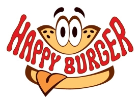
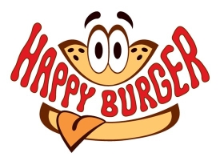

Spoločnosť Happy Burger.sro bola založená v roku 2015 dvoma milovníkmi tradičných domácich burgrov. Spoločnosť sa zameriava na prípravu domácich a burgrov a predajom doplnkového tovaru, ktoré poskytuje väčším odberateľom ako cateringové služby. Naším heslom je rýchlosť , čerstvosť a spokojnosť zákazníka. Spoločnosť začala ako jedna malá reštaurácia v centre Bratislavy. Jej popularita bola spočiatku nízka, avšak časom si začala získavať srdcia svojich zákazníkov. Jej popularita časom stúpala tak, že firma otvorila ďalšie dve pobočky. Jednu v Bratislave Petržalka a jednu dokonca v Trnave. V súčasnosti firma plánuje expanziu do ďalších slovenských miest a časom plánujeme expandovať aj na európsky trh.
Veľmi dobre vieme, že kvalitný burger je hlavne o mäse. To naše pochádza z najlepších slovenských a českých fariem a neobsahuje antibiotiká, či rastové hormóny, chemické zmäkčovadlá alebo iné prímesy. Jeho kvalitu pravidelne kontrolujeme priamo pri procese výroby. Mäsko koreníme počas príprav len na povrchu a to je tajomstvo, prečo náš burger chutí ako skutočné mäso.
Naša žemľa je čerstvá, chrumkavá a trošku sladká. Žiadne kupované polotovary. Žemle pečie náš dvorný pekár podľa tajnej receptúry – nie raz, ale hneď dvakrát denne! A pretože myslíme na všetkých, ktorým príroda nenadelila schopnosť spracovať lepok, tak okrem famóznej brioškovej maslovej žemle ponúkame aj bezlepkové žemličky pre celiatikov.
Všetka naša zelenina je vždy čerstvá a starostlivo vyberaná. Syr berieme priamo z Holandska.